CLAUDE CODE · ДИЗАЙН САЙТА
Пять способов улучшить дизайн сайта с ИИ
Средний уровень
На сайте трудно найти нужный раздел или понять, сработала ли кнопка? Здесь есть четыре способа поправить готовый экран и один способ собрать новую страницу по примеру.
Для правки готового сайта выбери один из первых четырёх способов для Claude Code или Codex. Для новой страницы открой инструкцию Craft Anything с установки до первой сборки.
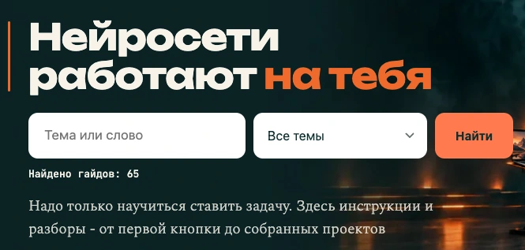
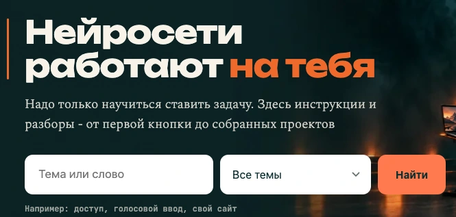
На первом экране каталога поиск раньше терялся под вступлением. После правки поле видно сразу, а под ним появился счётчик результатов.
- Taste Skill. Порядок элементов и первое действие посетителя.
- Impeccable. Шрифты, цвет и отступы.
- Навыки Эмиля Ковальски. Помогают выбрать, где нужно движение, добавить его и проверить результат. Для проверки жестов в этом же наборе есть Apple Design.
- Unslop. Находит, почему страница выглядит шаблонно, и по твоему запросу меняет её дизайн.
- Craft Anything. Разбирает страницу-образец и показывает план сборки. Агент собирает новую страницу, а Craft Anything сравнивает её с образцом. Агент исправляет найденные расхождения, и сравнение повторяется.
Скилл - это набор инструкций, которые читает помощник. Для первых четырёх способов возьми готовый сайт, папка которого уже есть на компьютере. Сделай копию, открой её предпросмотр в браузере, сохрани исходный снимок и установи выбранные навыки. Если нужна одна проверка, переходи к её запросу после установки. Craft Anything создаёт свой проект, для него эти шаги с копией сайта можно пропустить.
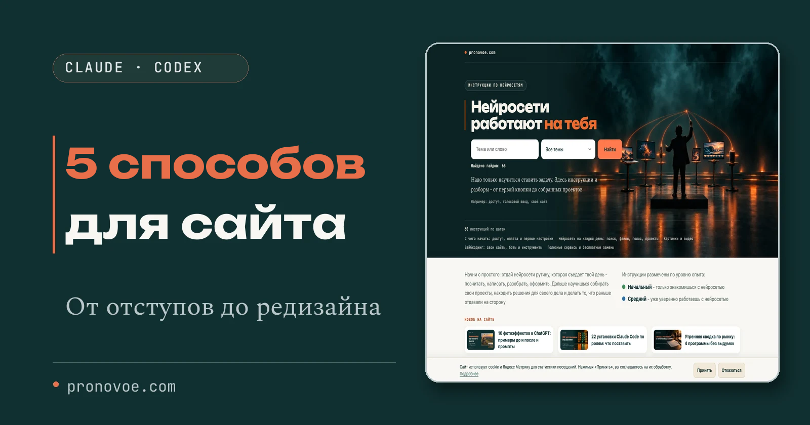
Содержание
Шаг 1. Сделай копию сайта и открой её папку
Найди на компьютере исходную папку с файлами сайта. На стартовой вкладке Welcome в VS Code выбери Open Folder в списке Start и укажи папку. Её имя появится слева в списке файлов.
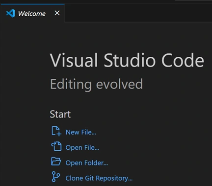
Скопируй полный путь к исходной папке. На Mac выдели папку в Finder и нажми Option+Cmd+C. В Windows открой папку в Проводнике, нажми Ctrl+L, затем Ctrl+C.
В VS Code открой любой файл сайта. В правой части верхней панели нажми оранжевое солнышко для Claude Code или чёрный значок Codex. Вставь запрос в поле сообщения внизу открывшегося чата. Цветом выделено то, что заменяешь своими данными.
Чтобы создать новую сессию, в верхней части панели Claude Code нажми плюс в кружке. В панели Codex нажми значок карандаша справа. Убедись, что новая сессия открылась в нужной папке.
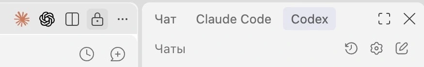
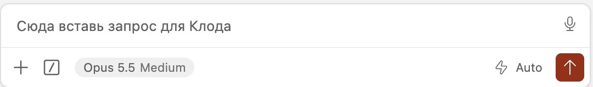
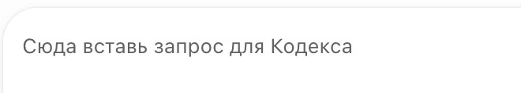
Исходная папка сайта: [полный путь к исходной папке]. Подготовь отдельную копию под именем [design-demo] вне любой другой папки проекта. Перед копированием покажи оба полных пути. Скопируй сайт и дай ссылку на папку копии. Исходные файлы оставь как есть.Храни копию вне родительского проекта Git. Git хранит историю изменений, а его корень - папка, где начинается эта история. Установщик Impeccable может выбрать этот корень и положить навыки в родительский проект.
Когда копия готова, открой её папку через ту же команду Open Folder и запусти новый чат уже в копии. Отправь запрос ниже. Помощник должен дать локальный адрес страницы и путь к снимку исходного экрана.
Запусти предпросмотр этой копии сайта на моём компьютере. Открой [страницу, которую будем проверять], пришли локальный адрес и сохрани снимок первого экрана при ширине [390 пикселей]. Покажи, где лежит снимок. Пока сохрани оформление и поведение страницы.Открой присланный адрес в браузере. Запомни ширину окна и путь к снимку. Они понадобятся в шаге 5.
Шаг 2. Подготовь выбранный инструмент
Первые четыре способа работают через навыки в папке проекта. Если хочешь собрать страницу по примеру, перейди к установке отдельного приложения Craft Anything.
Перед установкой нужен Node.js, среда для запуска команд. npx запускает установщик из терминала. Для браузерных проверок Taste Skill автор указывает Node.js 22 или новее и Chrome, Edge либо Chromium.
Выбранные навыки устанавливай один раз для каждой копии сайта. Чтобы по очереди проверить расположение блоков, детали оформления и реакцию на нажатие, возьми Taste Skill, Impeccable и нужные навыки Эмиля. Для проверки двух жестов поставь Apple Design, затем переходи к шагу 3 и проверке жестов.
Mac.
- Открой приложение «Терминал». Напечатай
cdи пробел, перетащи папку копии в окно и нажми Enter. - Введи
pwd. Должен появиться путь к копии. Чтобы увидеть скрытые папки в Finder, нажми Cmd+Shift+точка.
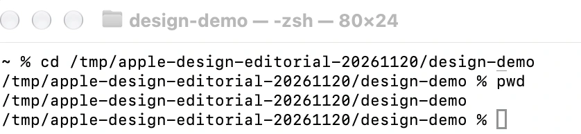
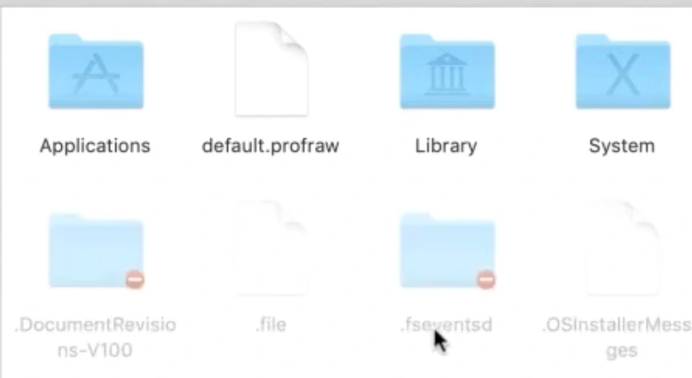
Windows.
- Открой папку копии в Проводнике. Нажми Ctrl+L, чтобы выделить адресную строку, введи
cmdи нажми Enter. - Путь к открытой папке появится перед знаком
>в командной строке. Сверь, что это папка копии. Чтобы увидеть скрытые папки, выбери «Вид → Показать → Скрытые элементы» в Windows 11. В Windows 10 включи «Скрытые элементы» на вкладке «Вид».
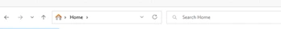
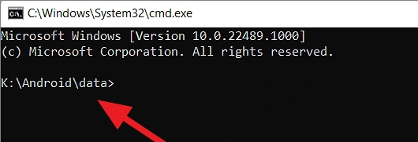
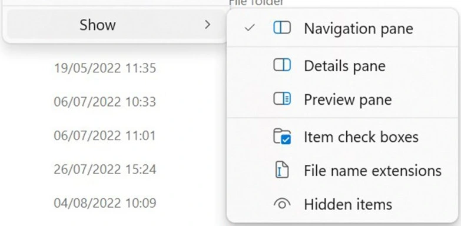
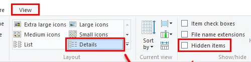
Вставляй в терминал команды для своего помощника по одной и дожидайся завершения. Если npx спросит, можно ли загрузить пакет, введи y и нажми Enter.
01 Taste Skill
Навык Леона Лина помогает разложить элементы так, чтобы посетитель сразу заметил нужный заголовок, поиск или кнопку.
npx skills@latest add https://github.com/Leonxlnx/taste-skill --skill design-taste-frontend --agent claude-code --yesnpx skills@latest add https://github.com/Leonxlnx/taste-skill --skill design-taste-frontend --agent codex --yes02 Impeccable
Навык Пола Бакауса помогает точечно поправить оформление, например сделать заголовок заметнее или разнести тесные кнопки.
Выполняй установку в папке отдельной копии. Если в итоговом выводе указан путь к другой папке, проверь корень проекта по шагу 1 перед дальнейшей работой.
npx impeccable install --providers=claude --scope=projectnpx impeccable install --providers=codex --scope=project03 Установка навыков Эмиля Ковальски
Для анимации выбери emil-design-eng, animate и review-animations. Для проверки жестов установи Apple Design из того же набора. Чтобы поставить все четыре навыка, выполни одну общую команду для анимации и одну отдельную для Apple Design.
npx skills@latest add emilkowalski/skills --skill emil-design-eng animate review-animations --agent claude-code --yesnpx skills@latest add emilkowalski/skills --skill emil-design-eng animate review-animations --agent codex --yesApple Design. Установка
- Открой терминал в папке копии, как описано выше. Скопируй одну из двух команд для своего помощника и нажми Enter.
- В конце терминал покажет
Installed 1 skill, то есть установлен один навык. Проверь, что рядом имяapple-design. В шаге 3 попроси помощника найти его файл.
npx --yes skills add emilkowalski/skills --skill apple-design --agent codex --yesnpx --yes skills add emilkowalski/skills --skill apple-design --agent claude-code --yesВ установочной проверке 23 октября 2026 использовался Node.js 24.18.0. Impeccable установился в версии навыка 4.7.0. Команды Apple Design отдельно проверены для Claude Code и Codex 20 ноября. Подробности проверки установки есть в записи прогона. Текущие инструкции авторов собраны в источниках.
04 Unslop
Unslop устанавливается один раз. Открой папку копии сайта в своём помощнике и выбери инструкцию для него. Установка на GitHub.
Установи Unslop из https://github.com/heydamir/unslop/tree/main/skills/unslop только для этой копии сайта. Положи весь навык в .agents/skills/unslop внутри папки проекта и покажи путь к SKILL.md.В ответе Codex покажет путь к .agents/skills/unslop/SKILL.md внутри копии сайта.
Если работаешь в Claude Code, открой терминал в папке копии и выполни команду с параметром --scope local. Так плагин будет доступен тебе в этом проекте.
claude plugin install unslop --marketplace heydamir/unslop --scope localПосле установки открой новый чат в той же папке. В Codex введи $unslop, в Claude Code введи /unslop. Следом напиши, какую страницу открыть и что на ней улучшить. Перейти к примеру запроса.
Для новой страницы открой инструкцию Craft Anything с установки.
Шаг 3. Проверь, что помощник видит навыки
Открой новый чат Claude Code или Codex в папке копии. Впиши в запрос только те имена, для которых выполнялась установка. SKILL.md - файл с инструкциями навыка.
Найди в этой копии проекта навыки из списка [например, apple-design]. Для каждого покажи полный путь к SKILL.md и название внутри файла. Если файла нет, укажи его имя. Пока оставь проект как есть.В ответе проверь название и путь. Установщик может хранить сам файл в одном месте и создавать ссылку на него для помощника. Если путь вызывает сомнение, попроси показать, куда ведёт ссылка и где лежит сам файл.
После проверки выбери свой запрос в шаге 4. Для точечной работы достаточно установленного навыка и соответствующего ему запроса.
Шаг 4. Дай первые запросы
Если меняешь весь экран, сначала выбери расположение блоков, затем уточни шрифты и отступы и проверь, что происходит при нажатии. Для правки существующей страницы открой её в браузере и укажи размер окна из шага 1. Для новой страницы переходи к запросу для Craft Anything.
Запросы ниже можно взять за основу для своей страницы. Запросы для Taste Skill, Impeccable и анимации Эмиля здесь приведены как шаблоны. В примере с каталогом показан отдельный браузерный прогон.
01 Taste Skill. Композиция
Прочитай design-taste-frontend. Открой [страницу] и предложи расположение блоков для действия [например, найти инструкцию по теме]. Покажи, какой элемент посетитель должен заметить первым, где он будет виден и почему остальные блоки идут в таком порядке. Оставь исходный текст, ссылки и фирменные цвета. Дождись моего решения по композиции.Выбери вариант, в котором нужный элемент легко найти. Затем попроси помощника внести одобренные изменения в копию, обнови страницу в браузере и проверь, что это действие можно выполнить. После этого переходи к деталям.
02 Impeccable. Точные детали
При первом применении Impeccable попроси помощника выполнить init. Команда создаёт PRODUCT.md, файл с описанием аудитории, задачи посетителя и ограничений проекта. Если файл уже есть, прочитай его и уточни только то, что поменялось.
Прочитай установленный навык impeccable. На [странице] примени [layout для отступов или typeset для шрифтов] к одной проблеме [например, подпись поиска сливается с соседним текстом]. Сделай правку в рамках утверждённой композиции. Покажи один фрагмент до и после в том же размере окна, чтобы сравнить читаемость подписи.Сверь именно тот элемент, который мешал. В примере подпись должна читаться отдельно от соседнего текста.
03 Навыки Эмиля Ковальски. Анимация и жесты
emil-design-eng помогает выбрать, где нужна реакция. animate добавляет движение, если оно помогает заметить результат действия. review-animations проверяет готовую анимацию.
Прочитай emil-design-eng. Проверь [действие, например нажатие кнопки «Найти»]. Покажи, по какому сигналу посетитель поймёт, что действие принято. Если нужна короткая визуальная реакция, примени animate. Проверь результат с review-animations, в том числе с включённой системной настройкой уменьшения движения. Покажи оба состояния в браузере.Проверь действие щелчком мыши. Для отдельной проверки с клавиатуры открой страницу в новой вкладке. Нажимай Tab, пока вокруг кнопки не появится контур. Он показывает, на каком элементе сейчас клавиатура. Затем нажми Enter. После щелчка и после нажатия Enter проверь, что видно результат.
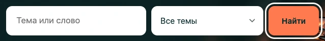
Чтобы проверить уменьшенное движение в Chrome, открой инструменты разработчика. Нажми Cmd+Shift+P на Mac или Ctrl+Shift+P на Windows. Найди команду Show Rendering или «Показать Отрисовка» и нажми Enter. В панели Rendering («Отрисовка») найди строку prefers-reduced-motion и выбери prefers-reduced-motion: reduce. Повтори действие на странице и посмотри, можно ли понять результат без анимации.
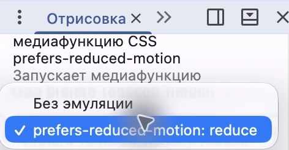
Apple Design. Проверь, можно ли передумать посреди жеста
Коснись кнопки и уведи палец за край, прежде чем отпустить. Потяни карточку вниз и передумай на полпути. Для этих проверок нужен установленный Apple Design.
- Открой новый чат в Claude Code или Codex в папке с копией сайта. Вставь запрос ниже в поле сообщения и отправь его.
- В ответе найди адрес страницы, название элемента, среду проверки и результат. По этим данным повтори жест на телефоне.
Примени скилл apple-design и проверь два жеста. На этом шаге оставь проект как есть.
1. Найди кнопку, которая открывает страницу или панель. Коснись кнопки, уведи палец за край и отпусти. Запиши отдельно, подсветилась ли кнопка при касании и открылось ли что-нибудь, пока палец был на экране. После отпускания за краем проверь, что ничего не открылось и состояние кнопки или формы сохранилось. Коснись кнопки повторно и отпусти палец внутри неё. Проверь, что нужная страница или панель открылась только после отпускания.
2. Найди карточку, которую закрывают движением вниз. Потяни вниз и отметь, пошла ли карточка за пальцем. Не отрывая пальца, смени направление и проверь, сразу ли карточка пошла обратно. Отпусти палец и проверь, осталась ли карточка открытой с тем же содержимым. Для контроля повтори закрывающий жест вниз до конца и отметь, закрылась ли карточка.
Для каждого результата укажи адрес, точное название элемента и его поведение. Отдельно подпиши, какие действия проверены на телефоне, какие в эмуляции и что известно только из кода. Если нужного элемента нет, сообщи об этом и дай шаги для ручной проверки других найденных элементов.Подключи телефон к той же сети Wi-Fi, что и компьютер. Попроси помощника сделать предпросмотр доступным только в этой локальной сети и прислать готовую ссылку с сетевым адресом компьютера и портом (числом после двоеточия). localhost на телефоне указывает на сам телефон. Открой присланную ссылку в Safari на iPhone или в Chrome на Android.
Если ссылка не открылась, попроси проверить, принимает ли предпросмотр подключения по сетевому адресу компьютера и разрешены ли они в брандмауэре для этой сети Wi-Fi.
Для предварительной проверки в Chrome нажми правой кнопкой на страницу и выбери Посмотреть код (Inspect). Вверху открывшейся панели нажми значок телефона и планшета (Toggle device toolbar), слева от вкладки Elements. Над страницей открой список Размеры (Dimensions) и выбери модель телефона.
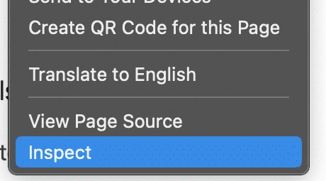
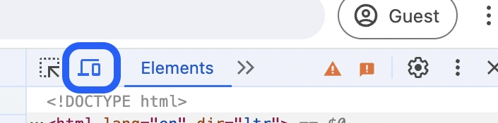
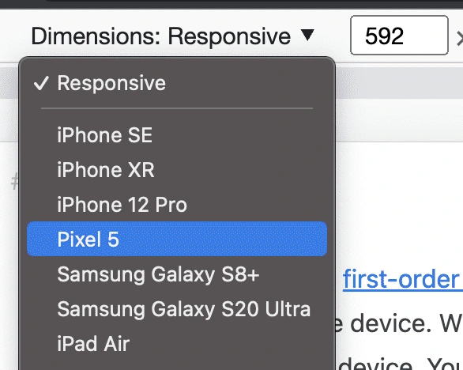
Панель устройств имитирует экран телефона. Реальное касание проверь на телефоне. Если доступен только код, запиши результат как вывод по коду и повтори жест на устройстве позже.
Если после отпускания за краем кнопки всё равно открылась страница или панель, нажатие не отменилось. Если карточка вернулась под палец и осталась открытой, закрытие прервалось. В примере каталога из шага 5 эти два жеста не проверяли.
04 Unslop. Редизайн страницы
Unslop помогает переделать дизайн готового сайта или приложения. Это бесплатный скилл Дамира Соколовского для Codex и Claude Code. Например, на странице записи три кнопки одинаково яркие, а у главной подпись «Далее». Скилл покажет, почему трудно выбрать действие, и предложит, какую кнопку выделить и что на ней написать.
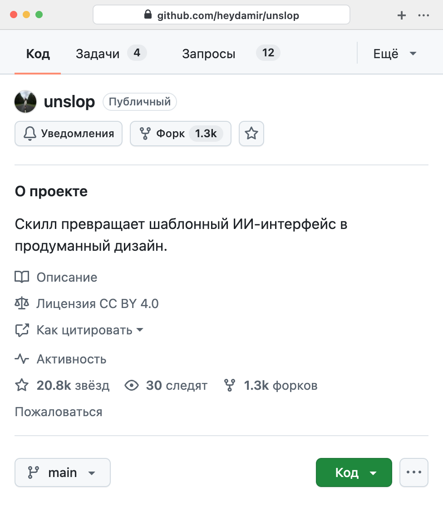
Где найти. Открой heydamir/unslop на GitHub. Сверху в адресе указаны имя автора heydamir и название проекта unslop. В README есть примеры запуска, а в файле SKILL.md описаны правила редизайна.
Что дать на вход. Можно указать страницу в папке проекта, адрес опубликованной страницы или скриншот. С файлами проекта помощник вносит согласованные правки прямо в открытую копию. По ссылке он сохраняет локальную версию страницы, по скрину собирает статический HTML-макет. Оба варианта можно открыть в браузере и передать разработчику.
Что запускает одна команда
После установки напиши $unslop в Codex или /unslop в Claude Code и добавь задачу. Можно задать один блок, страницу целиком с содержимым ниже первого экрана или перечислить несколько страниц проекта. Например, попроси последовательно разобрать главную, каталог и карточку товара и сохранить на всех трёх одинаковое оформление кнопок. Одна ссылка на главную задаёт работу с этой страницей.
Сначала помощник показывает, где именно расходятся отступы, какой текст трудно прочитать и какие элементы спорят за внимание. Затем предлагает оформление под задачу страницы и ждёт твоего решения. Если достаточно пары изменений, он предложит их. Если ты одобришь полноценный редизайн, помощник пройдёт выбранную страницу в девять этапов.
Что меняется за девять этапов
- Отступы. Выравнивает поля и интервалы. Например, подпись придвигает к тому полю, которое она поясняет.
- Цвета. Разделяет фон, текст и акценты, чтобы главная кнопка выделялась среди второстепенных.
- Иконки. Подбирает значки одного размера и стиля для меню и кнопок.
- Тексты. Уточняет заголовки и подписи. По кнопке «Выбрать время» сразу понятнее, что откроется после нажатия.
- Шрифты. Настраивает размер, начертание и межстрочный интервал для заголовков и основного текста.
- Компоновка. Выстраивает блоки и колонки так, чтобы главное действие легко находилось и на телефоне, и на компьютере.
- Детали интерфейса. Приводит к одному виду рамки, скругления и состояния элементов, например выделение поля при вводе.
- Изображения. Подбирает иллюстрацию под продукт. Если подключён генератор изображений, может создать её и заранее спросит согласие на платную генерацию.
- Движение. Настраивает отклик на действия, например появление меню после нажатия. Учитывает настройку уменьшенной анимации.
В конце помощник сравнивает обновлённый экран с исходным и перечисляет внесённые изменения. По отдельной просьбе он может записать короткое видео с результатом. Для захвата страницы по ссылке нужны Playwright и браузер Chromium, для видео дополнительно нужен ffmpeg. Описание возможностей у автора.
Попробуй на своей странице
Открой копию сайта и вставь запрос в новый чат Codex. Для Claude Code замени первое слово на /unslop. Выделенные фрагменты замени своими данными.
$unslop Открой в копии проекта [страницу или путь к файлу]. Посетитель приходит сюда, чтобы [например, выбрать услугу и записаться]. Посмотри всю страницу на телефоне и компьютере. Покажи, где оформление мешает этому действию. Предложи правки и дождись моего решения.
После согласования внеси выбранные изменения в копию. Сравни страницу до и после на одинаковой ширине. Проверь, что [например, кнопка записи открывает форму].Как это сработало на моём черновике
Я прогнала Unslop на черновике своей статьи с видео. На телефоне заголовок и меню занимали почти весь первый экран. Я хотела, чтобы читатель сразу увидел ролик и кнопку «Команда для агента». В Codex для разбора первого экрана использовался запрос $unslop Почему видео и команда не видны сразу?. Изменения внесли в копию страницы.
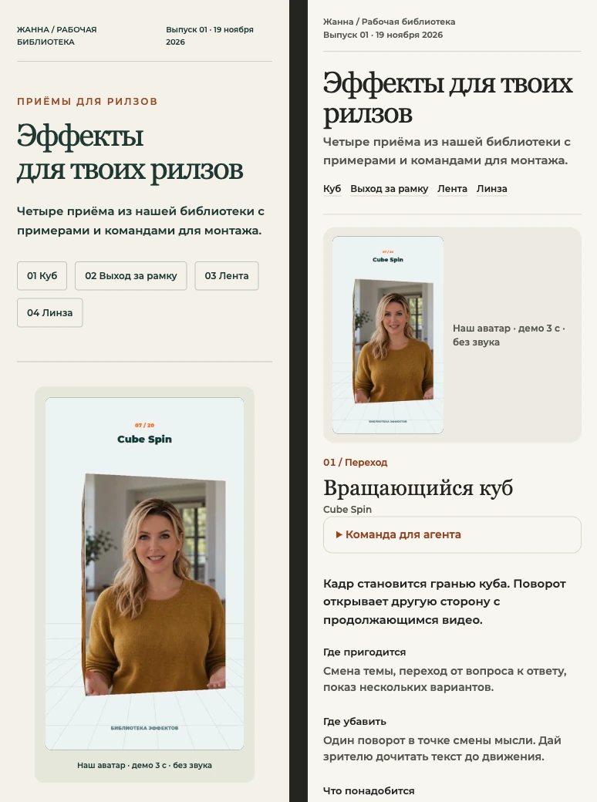
На ширине 390 пикселей видео и кнопка «Команда для агента» видны раньше. В браузере проверили, что видео запускается, а команду можно раскрыть и скопировать.
05 Craft Anything. Страница по примеру
Craft Anything открывается как отдельное приложение на компьютере. Оно изучает страницу-образец, поручает сборку Codex или Claude Code и сравнивает результат с образцом. В этом примере соберём страницу записи на мастер-класс по керамике, где можно выбрать время и открыть форму с телефона.
1. Скачай и открой Craft Anything
Открой страницу скачивания Craft Anything. Под описанием выпуска раскрой Assets («Файлы») и выбери установщик. Craft Anything достаточно установить один раз.
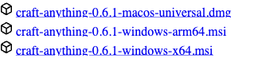
Mac. Скачай файл с окончанием macos-universal.dmg. Открой его из «Загрузок» и перетащи значок Craft Anything на значок Applications («Программы»). Затем открой Finder, зайди в «Программы» и дважды нажми Craft Anything.
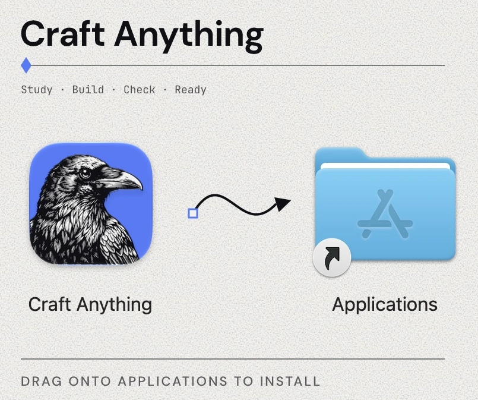
Windows. Скачай файл с окончанием windows-x64.msi или windows-arm64.msi. Тип процессора виден в «Параметры» → «Система» → «О системе» → «Тип системы». Открой скачанный файл, пройди установку, затем найди Craft Anything в меню «Пуск».
При первом запуске может открыться окно знакомства. Нажми I’m new to this («Я здесь впервые»). На экране Who builds what you make («Кто будет собирать») можно добавить Codex или перейти дальше кнопкой Continue («Дальше»). На экране What brings you here? напиши, что хочешь собрать страницу записи, и снова нажми Continue. Затем нажми Let’s go («Начать»). Откроется главное окно Craft Anything.
2. Подключи Codex для сборки
Открой «Терминал» на Mac или PowerShell на Windows. Введи codex --version. Если команда показывает номер версии, Codex уже установлен. Если команда не найдена, установи Codex CLI по инструкции OpenAI и открой новое окно терминала.
Проверь вход командой codex login status. Если Codex просит войти, введи codex login и выбери вход через ChatGPT в браузере.
В Craft Anything открой Settings («Настройки») внизу слева и выбери AI. В разделе Found on this computer («Найдено на этом компьютере») открой вкладку Harnesses («Помощники») и нажми Add («Добавить») рядом с Codex. Если список пуст, нажми Detect («Найти»). В добавленной карточке Codex нажми Check («Проверить»). Номер версии и статус signed in подтверждают, что Craft Anything видит Codex и вход выполнен. Инструкция разработчиков.
На Mac проверили Craft Anything 0.6.1 с Codex: он собрал простую HTML-страницу, а проект дошёл до статуса Ready («Готово»).
Если после нажатия Start в проекте появится ошибка model_not_found, открой Codex в терминале и введи /model, чтобы увидеть модели своего аккаунта. Затем в Craft Anything вернись в Settings → AI. В карточке Codex рядом с моделью нажми Change… («Изменить»), выбери доступную модель и повтори сборку.
Если собираешь через Claude Code. Подготовь его вместо Codex по шагам ниже.
Craft Anything запускает Claude Code, установленный на том же компьютере. Открой «Терминал» на Mac или PowerShell на Windows и введи claude --version. Если команда выводит номер версии, Claude Code уже установлен. Если команда не найдена, установи Claude Code по инструкции Anthropic, открой новое окно терминала и повтори проверку.
Если вход ещё не выполнен, введи claude auth login в том же окне и войди в аккаунт Anthropic в браузере. Вернись в Craft Anything. В главном окне слева увидишь + New project.
3. Вставь адрес образца и напиши, что собрать
В браузере открой конкретную страницу записи на мастер-класс, которую возьмёшь за образец. Скопируй её адрес из адресной строки. Затем вернись в открытое окно Craft Anything.
- Нажми + New project слева. Откроется экран What do you want to make? («Что сделать?»). На вкладке Make my own version («Сделать свою версию») выбери A website («Сайт»).
- Под A website появится поле Type the website’s address («Адрес сайта»). Вставь туда скопированную ссылку. Оставь режим Clean room, чтобы Craft Anything ориентировался на то, что видно посетителю страницы.
- Ниже, в большом поле под Say what you want («Что нужно сделать»), вставь запрос из блока под скриншотом. Это поле для описания твоей страницы записи.
- Под полем запроса найди Built by («Кто собирает»). Выбери Codex. Если готовил Claude Code, выбери Claude Code или оставь Automatic (Claude Code), если указан этот вариант. Нажми Start справа от списка. Откроется экран проекта, и начнётся Study («Изучение страницы»).
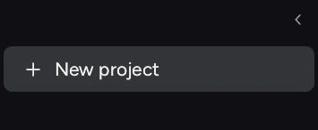
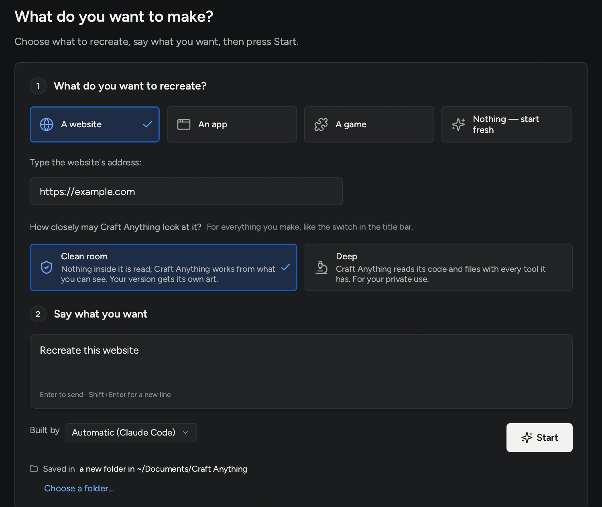
Первый запрос для записи на мастер-класс
Это учебный запрос. Мы не запускали сборку страницы по нему. Замени выделенные фрагменты своими данными.
По странице из поля адреса собери в отдельной папке страницу для [мастер-класса по керамике]. Человек должен выбрать [свободное время] и нажать «Записаться», чтобы открылась форма.
После сборки посмотри результаты сравнения. Для записи в первую очередь проверь мобильный экран шириной [390 пикселей]. Покажи, что мешает выбрать время или открыть форму, и предложи план правок. Затем внеси правки, снова сравни страницы и проверь кнопку «Записаться».Сравнение и правки
В карточке Plan видно, какие шаги сборки агент уже выполнил и что осталось. На этапе Check Craft Anything сравнивает страницы на ширине 1440, 768 и 390 пикселей и показывает расхождения. По этому списку агент предлагает правки, о которых ты просишь в запросе, вносит их и повторяет сравнение.
Когда появится статус Ready («Готово»), нажми Open the website («Открыть веб-сайт») в сообщении о готовности сайта. В браузере включи панель устройств и задай ширину 390 пикселей. Если хочешь проверить с настоящего телефона, найди папку этого проекта. Место сохранения видно под кнопкой Start на экране создания проекта. По умолчанию проекты лежат в Документы/Craft Anything. Попроси агента запустить собранный сайт из папки app по инструкции app/README.md и дать ссылку для той же сети Wi-Fi. Выбери время и нажми «Записаться». Если кнопка уехала за край, в поле Ask for a change внизу страницы проекта напиши, что именно поправить, и попроси повторить проверку.
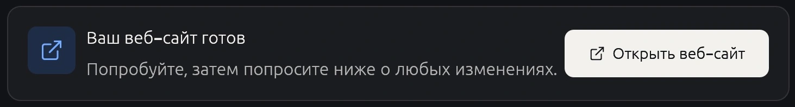
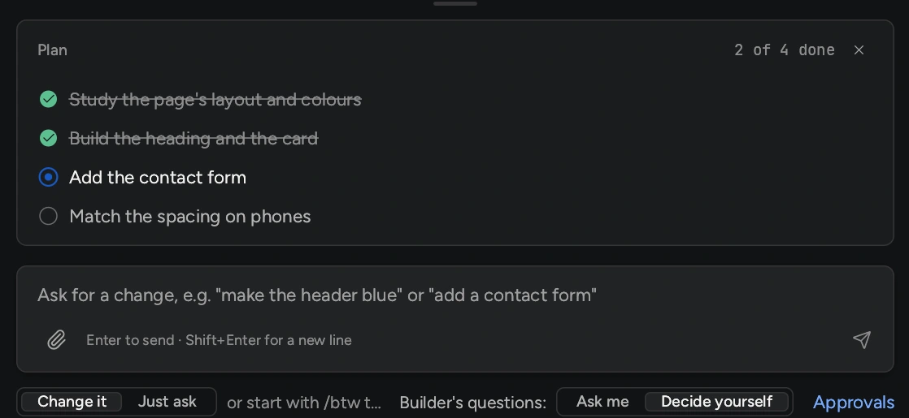
Открытая форма ещё не бронирует время. Craft Anything может собрать внешний вид формы. Для настоящей записи подключи сервис бронирования, отправь тестовую заявку и проверь, что слот появился в расписании.
Шаг 5. Сравни до и после
Для правки готового сайта открой исходный снимок и обновлённую страницу на одной ширине. Сначала попробуй выполнить нужное действие, затем сравни расположение элементов. Для каталога это поиск, выбор темы и открытие нужной инструкции. Если собираешь новую страницу, воспользуйся проверкой в разделе Craft Anything.
В сравнении в начале статьи показана одна копия каталога. На ней Taste Skill помог поднять поиск, Impeccable 4.4.0 - упростить оформление и показать число результатов, а навыки Эмиля - добавить видимый отклик на нажатие. Поведение каталога проверили в Chrome.
В ролике ниже следи за счётчиком под строкой поиска.
- Сначала выбраны «Все темы». Видно 65 материалов. После выбора темы Claude Code в списке остаётся 21 материал по этой теме.
- Запрос WhatsApp оставляет один подходящий материал. Когда очищаем поле, снова виден 21 материал. Тема Claude Code осталась выбранной.
- Когда возвращаем «Все темы», снова видны все 65 материалов.
Если у тебя на сайте есть поиск или фильтры, проверь по самим карточкам, остались ли только подходящие материалы и вернулся ли весь список после сброса. На другом экране проверь действие, ради которого его переделываешь. Например, на странице записи найди кнопку и убедись, что она открывает форму.
Копию каталога проверили в Chrome на компьютере и на мобильной ширине. В этой копии использовали Impeccable 4.4.0. Версию 4.7.0 отдельно проверили на установку 23 октября 2026 года.
Выбери команду Impeccable по проблеме
Это подборка команд, которые пригодятся на одном экране. Вставляй их в поле сообщения внизу чата. В Claude Code можно ввести /impeccable polish, в Codex - $impeccable polish или попросить применить polish обычными словами.
| Команда | Что поручить помощнику |
|---|---|
| init | Сохранить контекст продукта: для кого страница и что человек должен сделать |
| critique | Объяснить проблемы конкретного экрана |
| typeset | Привести в порядок шрифты, размеры и иерархию |
| layout | Исправить расположение блоков и отступы |
| bolder | Сделать кнопку основного действия заметнее рядом со второстепенной |
| quieter | Приглушить второстепенную кнопку, которая перетягивает внимание |
| animate | Добавить движение с понятной функцией |
| audit | Проверить доступность, адаптацию и техническое качество |
| harden | Проверить длинный текст, ошибки и экран без результатов |
| distill | Убрать лишнее, сохранив полезное содержание |
| adapt | Приспособить экран к другому размеру устройства |
| polish | Проверить выравнивание, подписи и состояния перед показом |
Не перепутай навыки Эмиля с Motion
Навыки Эмиля хранят рекомендации для помощника. Motion - библиотека кода для создания анимации. Для реакции простой кнопки может хватить CSS, правил оформления страницы. Сначала попроси помощника посмотреть, чем проект уже пользуется.
Учитывай версию установленного навыка
Документация и настройки навыков обновляются. Попроси помощника открыть именно установленный SKILL.md и назвать команды, которые доступны в твоём проекте.
Исправь типовые ошибки
Терминал не находит npx. На Mac можно увидеть command not found: npx, на Windows - сообщение, что имя npx не распознано. Установи Node.js с официального сайта и открой новое окно терминала. Введи node --version и npx --version. Когда увидишь оба номера, повтори установку навыка.
Навык установлен, а помощник его не видит. Сверь путь в выводе команды с папкой копии. Если установщик выбрал родительский проект, подготовь отдельную копию вне его, повтори установку там и открой новый чат в нужной папке.
В Codex не срабатывает /impeccable. Попробуй $impeccable или попроси прочитать установленный SKILL.md и применить нужную команду. Проверка пути в шаге 3 поможет найти проблему установки.
Быстро расходуется лимит помощника. Долгие правки и повторные проверки в браузере расходуют доступные запросы или вычисления по твоему тарифу. Проси проверить один экран и одну правку за раз.
Проверь то, что оформление не решает
Вернись к экрану и назови действие посетителя одной фразой. Например, «Человек приходит за инструкцией по теме и нажимает на нужный материал». Проверь, помогают ли ему заголовок, порядок блоков и кнопка.
Частые вопросы
Нужно уметь программировать?
Запросы можно писать словами. Для правки сайта нужна папка проекта. Для новой страницы в Craft Anything приготовь ссылку на образец и выполни вход в Codex или Claude Code на том же компьютере.
Обязательно устанавливать все навыки?
Для точечной правки выбери один навык. Например, для проверки двух жестов достаточно Apple Design. В шаге 3 укажи только выбранное имя.
Можно поставить навыки для Claude Code?
Да. В шаге 2 выбирай команды с меткой «Claude Code». Запросы на правку отправляй в чат Claude Code в той же папке.
Будут ли навыки доступны во всех проектах?
Команды статьи относятся к открытой копии. Для другой папки повтори установку нужных навыков. Путь проверяется в шаге 3.
Когда обновлять PRODUCT.md?
Когда меняется задача проекта, сначала открой PRODUCT.md и уточни, для кого экран и какое действие должен выполнить человек. При той же задаче достаточно созданного файла.
Почему навыки появились в двух папках?
Один путь может быть ссылкой на тот же файл. Если пути ведут к разным файлам, сравни их содержимое и проверь, какой из них помощник открыл.
Можно использовать навыки в коммерческом проекте?
Условия для кода описаны в лицензиях Taste Skill, Impeccable и набора Эмиля. Для Unslop автор указывает лицензию CC BY 4.0. При распространении навыка или его адаптации укажи Дамира Соколовского и ссылку на репозиторий. Права на добавленные в сайт изображения, шрифты и другие материалы проверяй отдельно.
Источники
- Taste Skill. Установка и требования к Node.js
- Impeccable. Команды и файл PRODUCT.md
- Навыки Эмиля Ковальски и Apple Design.
- Unslop Дамира Соколовского. Установка и применение.
- Craft Anything. Сборка и сравнение с образцом.
- Craft Anything 0.6.1. Название кнопки открытия сайта.
- Документация по установке навыков
- Chrome. Эмуляция экрана телефона и её ограничения
- Проверка установки Apple Design в Claude Code и Codex.
- Проверка архивного каталога и происхождение кадров и записи.
После одного экрана можно перейти к другим задачам сайта, от содержания страниц до воронки.
Что можно делать с нейросетями, если не знаешь кода?
Чтобы почувствовать размах, посмотри Концентрат Ивана Сергеева в записи. ИИ-агенты на твоих глазах собирают продукт, контент, сайты и воронки без кода. Это основа под любую цель: свои услуги, партнёрка, чужой бизнес. Три вечера в записи, промпты и четыре скилла. 990 ₽ один раз. Доступ на 14 дней после оплаты.
Забрать КонцентратУже знаешь, чего хочешь? Тогда в мастер-группу Ивана: система продаж на ИИ без продюсера и технаря, сопровождение и сообщество
Заполнить анкету предзаписиНабор открывается редко, кто записался заранее, получает лучшую цену и бонусы. Платить сейчас не нужно
Реклама. ИП Сергеев И. С., ИНН 352511695540. erid: 2Vtzqwfc8iA